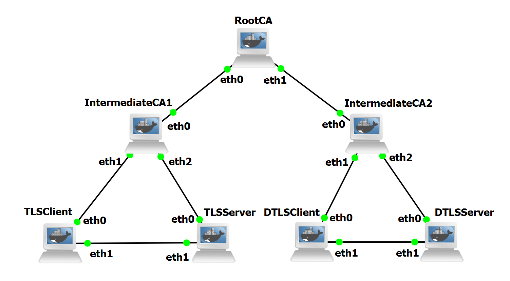

Overview
PKI Laboratory
A public key infrastructure (PKI) consists of the components necessary to securely distribute public keys: certificates, a method to revoke certificates, and a method to evaluate a chain of certificates from public keys that are known and trusted in advance (trust anchors) to the target name.
Its primary purpose is to bind public keys to verified identities through digital certificates, allowing entities to authenticate one another without prior contact. At the center of this infrastructure are Certificate Authorities (CAs), which issue certificates after validating the identity of the subject according to their issuance policies.
PKI is structured as a hierarchical trust model consisting of a root CA, subordinate or intermediate CAs, and end-entity certificates. The root CA acts as the trust anchor and is self-signed, meaning that its certificate must be provisioned securely into devices or software beforehand.
Intermediate CAs extend trust outward by issuing certificates to end entities, while also providing separation of responsibilities and risk containment in case of compromise. Certificate chains linking end-entity certificates to the root provide a verifiable path of trust that can be validated during protocol handshakes.
Certificate Management
The lifecycle of a digital certificate begins with enrollment, where a subject generates a key pair, followed by the submission of a Certificate Signing Request (CSR) to a CA.
The CA validates the identity of the subject using authentication procedures appropriate to the intended security level, ranging from simple domain validation to more stringent organizational or extended validation checks.
Once validated, the CA signs the certificate and may publish it along with its status information, enabling entities to retrieve it for several operations, such as identity authentication, secure key exchange, digital signing of documents, and establishing trust between two parties, among others.
Certificate validity must be continuously maintained through renewal and rotation. Renewal occurs before certificate expiration to ensure uninterrupted operation, while rotation involves periodically replacing key pairs to maintain cryptographic freshness and minimize long-term exposure.
Revocation is also a critical part of lifecycle management, addressing scenarios where private keys are compromised or certificate information becomes invalid. Revocation information can be distributed through Certificate Revocation Lists (CRLs) and online services such as the Online Certificate Status Protocol (OCSP), which enables the status of a certificate to be checked.
Automated mechanisms such as the Automatic Certificate Management Environment (ACME) have become increasingly important for scaling PKI operations in large distributed systems. ACME enables automated certificate issuance, renewal, and revocation processes.
Laboratory Topology
The topology of this laboratory consists of:
- Seven Docker containers, using the image ghcr.io/groudonramsay/ubuntu-tls:latest, which are RootCA, IntermediateCA1 and IntermediateCA2, TLSClient, TLSServer, DTLSClient and DTLSServer.
The topology is visible in Figure 1:

When adding the container to your templates, use 2 adapters and the following environment variables:
Before beginning the configuration, modify all machines to persist the /root/pki folder in order to preserve the PKI setup. Furthermore, modify IntermediateCA1 and IntermediateCA2 to have three adapters.
Device Configuration
We will begin the configuration by adding all the necessary IP addresses and routes for the PKI to function properly.
RootCA:
ip addr add 10.0.1.10/24 dev eth0
ip link set eth0 up
ip addr add 10.0.2.20/24 dev eth1
ip link set eth1 up
ip route add 10.0.3.0/24 via 10.0.1.1
ip route add 10.0.4.0/24 via 10.0.1.1
ip route add 10.0.5.0/24 via 10.0.2.2
ip route add 10.0.6.0/24 via 10.0.2.2
IntermediateCA1:
ip addr add 10.0.1.1/24 dev eth0
ip link set eth0 up
ip addr add 10.0.3.1/24 dev eth1
ip link set eth1 up
ip addr add 10.0.4.1/24 dev eth2
ip link set eth2 up
IntermediateCA2:
ip addr add 10.0.2.2/24 dev eth0
ip link set eth0 up
ip addr add 10.0.5.1/24 dev eth1
ip link set eth1 up
ip addr add 10.0.6.1/24 dev eth2
ip link set eth2 up
TLSClient:
ip addr add 10.0.3.2/24 dev eth0
ip link set eth0 up
ip addr add 10.0.7.1/24 dev eth1
ip link set eth1 up
ip route add 10.0.1.0/24 via 10.0.3.1
TLSServer:
ip addr add 10.0.4.2/24 dev eth0
ip link set eth0 up
ip addr add 10.0.7.2/24 dev eth1
ip link set eth1 up
ip route add 10.0.1.0/24 via 10.0.4.1
DTLSClient:
ip addr add 10.0.5.2/24 dev eth0
ip link set eth0 up
ip addr add 10.0.8.1/24 dev eth1
ip link set eth1 up
ip route add 10.0.2.0/24 via 10.0.5.1
DTLSServer:
ip addr add 10.0.6.2/24 dev eth0
ip link set eth0 up
ip addr add 10.0.8.2/24 dev eth1
ip link set eth1 up
ip route add 10.0.2.0/24 via 10.0.6.1
After this setup, you should be able to ping any device from RootCA.
With this stage complete, we will now begin configuring our Certificate Authorities. In our topology, we will have a root Certificate Authority, RootCA, which will have a self-signed certificate.
This CA will then sign the certificates for the other two CAs, IntermediateCA1 and IntermediateCA2. These CAs will be responsible for signing certificates for the end devices. IntermediateCA1 will sign the certificates for the TLS devices, and IntermediateCA2 will sign the certificates for the DTLS devices.
We will begin by configuring RootCA. The first step is generating the directory where we will work and securing it using:
Afterward, we will generate the key pair that this CA will use, with:
openssl genpkey \
-algorithm RSA \
-pkeyopt rsa_keygen_bits:4096 \
-out /root/pki/root/private/root-ca.key
chmod 600 /root/pki/root/private/root-ca.key
Finally, we will generate the RootCA certificate:
openssl req \
-x509 \
-new \
-sha256 \
-days 3650 \
-key /root/pki/root/private/root-ca.key \
-out /root/pki/root/certs/root-ca.crt \
-subj "/C=PT/O=Advanced Tunnelling Labs/CN=Advanced Tunnelling Labs Root CA" \
-addext "basicConstraints=critical,CA:true,pathlen:1" \
-addext "keyUsage=critical,keyCertSign,cRLSign" \
-addext "subjectKeyIdentifier=hash"
To check our certificate, we can use the command:
This will provide information regarding the issuer, validity, subject, public key, signature, extensions, and other valuable information.
With this, our RootCA is ready to sign the certificates for the other two CAs. Let's begin with IntermediateCA1.
First, go to IntermediateCA1, create its directory, and generate its key pair:
mkdir -p /root/pki/int-ca1/{private,certs,csr}
chmod 700 /root/pki/int-ca1/private
openssl genpkey \
-algorithm RSA \
-pkeyopt rsa_keygen_bits:3072 \
-out /root/pki/int-ca1/private/int-ca1.key
chmod 600 /root/pki/int-ca1/private/int-ca1.key
Then, issue a Certificate Signing Request, with:
openssl req \
-new \
-sha256 \
-key /root/pki/int-ca1/private/int-ca1.key \
-out /root/pki/int-ca1/csr/int-ca1.csr \
-subj "/C=PT/O=Advanced Tunnelling Labs/OU=PKI/CN=Intermediate CA 1"
Now, inspect the contents of the request and copy it into the RootCA using:
cat /root/pki/int-ca1/csr/int-ca1.csr
Copy the content and paste into RootCA with:
nano /root/pki/root/csr/int-ca1.csr
Now that the CSR is on RootCA, we will create the .ext file containing the parameters that we want our certificate to use:
cat > /root/pki/root/int-ca.ext <<'EOF'
basicConstraints=critical,CA:true,pathlen:0
keyUsage=critical,keyCertSign,cRLSign
subjectKeyIdentifier=hash
authorityKeyIdentifier=keyid,issuer
EOF
Now, we will generate the certificate for IntermediateCA1 using its CSR, the RootCA certificate and signing key, and the .ext file we created:
openssl x509 \
-req \
-sha256 \
-days 1825 \
-in /root/pki/root/csr/int-ca1.csr \
-CA /root/pki/root/certs/root-ca.crt \
-CAkey /root/pki/root/private/root-ca.key \
-CAcreateserial \
-out /root/pki/root/certs/int-ca1.crt \
-extfile /root/pki/root/int-ca.ext
We can inspect the resulting certificate using:
It will be similar to the one used by RootCA, but in this case, it is not self-signed and will be used to sign certificates for end devices.
To complete this process for IntermediateCA1, we need to copy the certificate back to IntermediateCA1, as well as RootCA's own certificate, for certificate chain validation:
cat /root/pki/root/certs/int-ca1.crt
Copy content and paste into IntCA1:
nano /root/pki/int-ca1/certs/int-ca1.crt
---------------------------------------
cat /root/pki/root/certs/root-ca.crt
Copy content and paste into IntCA1:
nano /root/pki/int-ca1/certs/root-ca.crt
With this, IntermediateCA1 is ready to sign certificates.
The steps for IntermediateCA2 are identical, with only changes to the names and file paths. The commands used are as follows:
mkdir -p /root/pki/int-ca2/{private,certs,csr}
chmod 700 /root/pki/int-ca2/private
------------------------------------------
openssl genpkey \
-algorithm RSA \
-pkeyopt rsa_keygen_bits:3072 \
-out /root/pki/int-ca2/private/int-ca2.key
chmod 600 /root/pki/int-ca2/private/int-ca2.key
------------------------------------------
openssl req \
-new \
-sha256 \
-key /root/pki/int-ca2/private/int-ca2.key \
-out /root/pki/int-ca2/csr/int-ca2.csr \
-subj "/C=PT/O=Advanced Tunnelling Labs/OU=PKI/CN=Intermediate CA 2"
cat /root/pki/int-ca2/csr/int-ca2.csr
Copy content from IntCA2 to RootCA:
nano /root/pki/root/csr/int-ca2.csr
-------------------------------------------
In RootCA:
cat > /root/pki/root/int-ca.ext <<'EOF'
basicConstraints=critical,CA:true,pathlen:0
keyUsage=critical,keyCertSign,cRLSign
subjectKeyIdentifier=hash
authorityKeyIdentifier=keyid,issuer
EOF
--------------------------------------------
openssl x509 \
-req \
-sha256 \
-days 1825 \
-in /root/pki/root/csr/int-ca2.csr \
-CA /root/pki/root/certs/root-ca.crt \
-CAkey /root/pki/root/private/root-ca.key \
-CAcreateserial \
-out /root/pki/root/certs/int-ca2.crt \
-extfile /root/pki/root/int-ca.ext
--------------------------------------------
cat /root/pki/root/certs/int-ca2.crt
Copy content and paste into IntCA2:
nano /root/pki/int-ca2/certs/int-ca2.crt
---------------------------------------
cat /root/pki/root/certs/root-ca.crt
Copy content and paste into IntCA2:
nano /root/pki/int-ca2/certs/root-ca.crt
With all CAs finished, we will now generate and sign the certificates for the end devices, starting with the TLS devices.
First, we will generate the certificate for TLSServer. We begin by creating the directory, generating the key pair, and creating the CSR:
mkdir -p /root/pki/tls-server
openssl genpkey \
-algorithm RSA \
-pkeyopt rsa_keygen_bits:2048 \
-out /root/pki/tls-server/tls-server.key
openssl req \
-new \
-sha256 \
-key /root/pki/tls-server/tls-server.key \
-out /root/pki/tls-server/tls-server.csr \
-subj "/C=PT/O=Advanced Tunnelling Labs/OU=TLS/CN=tls-server"
Now, we will send the CSR to IntCA1:
cat /root/pki/tls-server/tls-server.csr
Copy content from TLSServer to IntCA1:
nano /root/pki/int-ca1/csr/tls-server.csr
Then, we create the .ext file and generate the certificate:
cat > /root/pki/int-ca1/tls-server.ext <<'EOF'
basicConstraints=critical,CA:false
keyUsage=critical,digitalSignature
extendedKeyUsage=serverAuth
subjectAltName=DNS:tls-server,IP:10.0.4.2
subjectKeyIdentifier=hash
authorityKeyIdentifier=keyid,issuer
EOF
openssl x509 \
-req \
-sha256 \
-days 365 \
-in /root/pki/int-ca1/csr/tls-server.csr \
-CA /root/pki/int-ca1/certs/int-ca1.crt \
-CAkey /root/pki/int-ca1/private/int-ca1.key \
-CAcreateserial \
-out /root/pki/int-ca1/certs/tls-server.crt \
-extfile /root/pki/int-ca1/tls-server.ext
Finally, we send the certificate back to TLSServer for it to use. Additionally, we will send IntermediateCA1's own certificate and the RootCA certificate so that TLSServer has the certificates required to validate the certificate chain:
cat /root/pki/int-ca1/certs/tls-server.crt
Copy content and paste into TLSServer:
nano /root/pki/tls-server/tls-server.crt
---------------------------------------
cat /root/pki/int-ca1/certs/int-ca1.crt
Copy content and paste into TLSServer:
nano /root/pki/tls-server/int-ca1.crt
--------------------------------------
cat /root/pki/int-ca1/certs/root-ca.crt
Copy content and paste into TLSServer:
nano /root/pki/tls-server/root-ca.crt
The configuration for TLSClient, DTLSServer, and DTLSClient is extremely similar to this one, varying only in some names, file paths, and parameters. As such, we will present their configurations in a more succinct and direct way.
Starting with TLSClient:
mkdir -p /root/pki/tls-client
openssl genpkey \
-algorithm RSA \
-pkeyopt rsa_keygen_bits:2048 \
-out /root/pki/tls-client/tls-client.key
openssl req \
-new \
-sha256 \
-key /root/pki/tls-client/tls-client.key \
-out /root/pki/tls-client/tls-client.csr \
-subj "/C=PT/O=Advanced Tunnelling Labs/OU=TLS/CN=tls-client"
cat /root/pki/tls-client/tls-client.csr
Copy content from TLSClient to IntCA1:
nano /root/pki/int-ca1/csr/tls-client.csr
------------------------------------------------------
cat > /root/pki/int-ca1/tls-client.ext <<'EOF'
basicConstraints=critical,CA:false
keyUsage=critical,digitalSignature
extendedKeyUsage=clientAuth
subjectAltName=DNS:tls-client,IP:10.0.3.2
subjectKeyIdentifier=hash
authorityKeyIdentifier=keyid,issuer
EOF
openssl x509 \
-req \
-sha256 \
-days 365 \
-in /root/pki/int-ca1/csr/tls-client.csr \
-CA /root/pki/int-ca1/certs/int-ca1.crt \
-CAkey /root/pki/int-ca1/private/int-ca1.key \
-CAcreateserial \
-out /root/pki/int-ca1/certs/tls-client.crt \
-extfile /root/pki/int-ca1/tls-client.ext
-------------------------------------------------------
cat /root/pki/int-ca1/certs/tls-client.crt
Copy content and paste into TLSClient:
nano /root/pki/tls-client/tls-client.crt
---------------------------------------
cat /root/pki/int-ca1/certs/int-ca1.crt
Copy content and paste into TLSClient:
nano /root/pki/tls-client/int-ca1.crt
--------------------------------------
cat /root/pki/int-ca1/certs/root-ca.crt
Copy content and paste into TLSClient:
nano /root/pki/tls-client/root-ca.crt
Then, DTLSServer:
mkdir -p /root/pki/dtls-server
openssl genpkey \
-algorithm RSA \
-pkeyopt rsa_keygen_bits:2048 \
-out /root/pki/dtls-server/dtls-server.key
openssl req \
-new \
-sha256 \
-key /root/pki/dtls-server/dtls-server.key \
-out /root/pki/dtls-server/dtls-server.csr \
-subj "/C=PT/O=Advanced Tunnelling Labs/OU=DTLS/CN=dtls-server"
cat /root/pki/dtls-server/dtls-server.csr
Copy content from DTLSServer to IntCA2:
nano /root/pki/int-ca2/csr/dtls-server.csr
---------------------------------------------------------
cat > /root/pki/int-ca2/dtls-server.ext <<'EOF'
basicConstraints=critical,CA:false
keyUsage=critical,digitalSignature
extendedKeyUsage=serverAuth
subjectAltName=DNS:dtls-server,IP:10.0.6.2
subjectKeyIdentifier=hash
authorityKeyIdentifier=keyid,issuer
EOF
openssl x509 \
-req \
-sha256 \
-days 365 \
-in /root/pki/int-ca2/csr/dtls-server.csr \
-CA /root/pki/int-ca2/certs/int-ca2.crt \
-CAkey /root/pki/int-ca2/private/int-ca2.key \
-CAcreateserial \
-out /root/pki/int-ca2/certs/dtls-server.crt \
-extfile /root/pki/int-ca2/dtls-server.ext
---------------------------------------------------------
cat /root/pki/int-ca2/certs/dtls-server.crt
Copy content and paste into DTLSServer:
nano /root/pki/dtls-server/dtls-server.crt
---------------------------------------
cat /root/pki/int-ca2/certs/int-ca2.crt
Copy content and paste into DTLSServer:
nano /root/pki/dtls-server/int-ca2.crt
--------------------------------------
cat /root/pki/int-ca2/certs/root-ca.crt
Copy content and paste into DTLSServer:
nano /root/pki/dtls-server/root-ca.crt
Finally, DTLSClient:
mkdir -p /root/pki/dtls-client
openssl genpkey \
-algorithm RSA \
-pkeyopt rsa_keygen_bits:2048 \
-out /root/pki/dtls-client/dtls-client.key
openssl req \
-new \
-sha256 \
-key /root/pki/dtls-client/dtls-client.key \
-out /root/pki/dtls-client/dtls-client.csr \
-subj "/C=PT/O=Advanced Tunnelling Labs/OU=DTLS/CN=dtls-client"
cat /root/pki/dtls-client/dtls-client.csr
Copy content from DTLSClient to IntCA2:
nano /root/pki/int-ca2/csr/dtls-client.csr
----------------------------------------------------------
cat > /root/pki/int-ca2/dtls-client.ext <<'EOF'
basicConstraints=critical,CA:false
keyUsage=critical,digitalSignature
extendedKeyUsage=clientAuth
subjectAltName=DNS:dtls-client,IP:10.0.5.2
subjectKeyIdentifier=hash
authorityKeyIdentifier=keyid,issuer
EOF
openssl x509 \
-req \
-sha256 \
-days 365 \
-in /root/pki/int-ca2/csr/dtls-client.csr \
-CA /root/pki/int-ca2/certs/int-ca2.crt \
-CAkey /root/pki/int-ca2/private/int-ca2.key \
-CAcreateserial \
-out /root/pki/int-ca2/certs/dtls-client.crt \
-extfile /root/pki/int-ca2/dtls-client.ext
---------------------------------------------------------
cat /root/pki/int-ca2/certs/dtls-client.crt
Copy content and paste into DTLSClient:
nano /root/pki/dtls-client/dtls-client.crt
---------------------------------------
cat /root/pki/int-ca2/certs/int-ca2.crt
Copy content and paste into DTLSClient:
nano /root/pki/dtls-client/int-ca2.crt
--------------------------------------
cat /root/pki/int-ca2/certs/root-ca.crt
Copy content and paste into DTLSClient:
nano /root/pki/dtls-client/root-ca.crt
With this, all devices now have their own certificates ready. To finish the preparation, we will create the certificate chains that will be used by the devices when authenticating through certificates.
The chain for TLSServer is created using:
cat \
/root/pki/tls-server/tls-server.crt \
/root/pki/tls-server/int-ca1.crt \
> /root/pki/tls-server/tls-server-chain.crt
The chain for TLSClient is created using:
cat \
/root/pki/tls-client/tls-client.crt \
/root/pki/tls-client/int-ca1.crt \
> /root/pki/tls-client/tls-client-chain.crt
The chain for DTLSServer is created using:
cat \
/root/pki/dtls-server/dtls-server.crt \
/root/pki/dtls-server/int-ca2.crt \
> /root/pki/dtls-server/dtls-server-chain.crt
The chain for DTLSClient is created using:
cat \
/root/pki/dtls-client/dtls-client.crt \
/root/pki/dtls-client/int-ca2.crt \
> /root/pki/dtls-client/dtls-client-chain.crt
Now, when we create a TLS or DTLS tunnel, we can see the devices authenticating through the certificates we generated using our PKI.
Furthermore, on DTLS, if we use a Wireshark probe during the handshake, we will be able to see the certificate and its information when it is reassembled.
To test whether everything is working, for TLS, use the following commands:
TLSServer:
openssl s_server \
-accept 4433 \
-cert /root/pki/tls-server/tls-server.crt \
-key /root/pki/tls-server/tls-server.key \
-cert_chain /root/pki/tls-server/int-ca1.crt \
-CAfile /root/pki/tls-server/root-ca.crt \
-Verify 1 \
-verify_return_error
TLSClient:
openssl s_client \
-connect 10.0.7.2:4433 \
-CAfile /root/pki/tls-client/root-ca.crt \
-cert /root/pki/tls-client/tls-client.crt \
-key /root/pki/tls-client/tls-client.key \
-cert_chain /root/pki/tls-client/int-ca1.crt \
-verify_return_error
The connection should be established, and you should see the authentication process occur successfully in your terminal.
The commands for DTLS are as follows:
DTLSServer:
openssl s_server \
-dtls1_2 \
-accept 4444 \
-cert /root/pki/dtls-server/dtls-server.crt \
-key /root/pki/dtls-server/dtls-server.key \
-cert_chain /root/pki/dtls-server/int-ca2.crt \
-CAfile /root/pki/dtls-server/root-ca.crt \
-Verify 1 \
-verify_return_error
DTLSClient:
openssl s_client \
-dtls1_2 \
-connect 10.0.8.2:4444 \
-CAfile /root/pki/dtls-client/root-ca.crt \
-cert /root/pki/dtls-client/dtls-client.crt \
-key /root/pki/dtls-client/dtls-client.key \
-cert_chain /root/pki/dtls-client/int-ca2.crt \
-verify_return_error
You should see the same authentication process occur and succeed in your DTLS connection.
Because Docker images and containers are used for our devices, it is also possible to perform this laboratory in Containerlab if that is your preference.
With all these configurations implemented and successfully tested, we can now move forward to the Experiments.